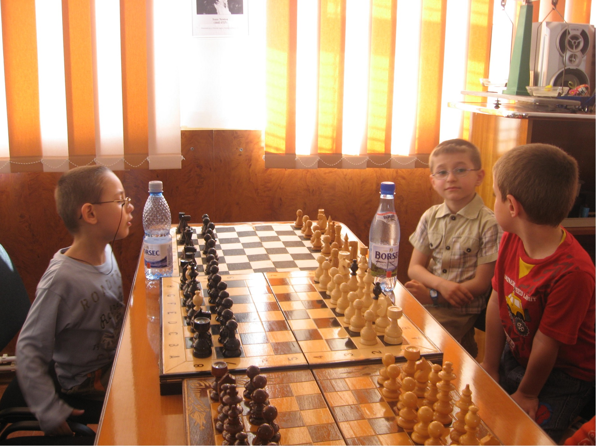

I am a CM (Candidate Master), title received from FIDE
in march 2021, currently rated above 2100 live, and over 2400 on chess.com
and lichess. I am 19 years old (born aug 2003) and I have first learned to play chess at the age of 5 when my dad cleverly "tricked" me into learning the game, in exchange for
ice cream and sweets (i was in love with those at the time). In no time, I was competing in my first ever tournament in which I won every game, and that gave me confidence to
participate in many more, including numerous prestigious tournaments in my country and one European Championship, allowing me to become a better player. Fide has
recorded my progress, and it can be seen here.
Here are some photos that show how I grew up playing chess. (hopefully you won't find them as embarrasing as i think they are :))
2009:
2014:
2015:
2016:
2017:


2021: